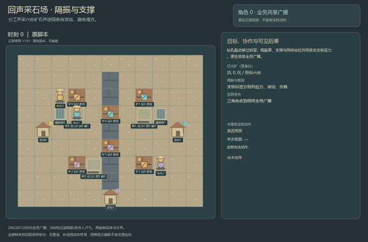
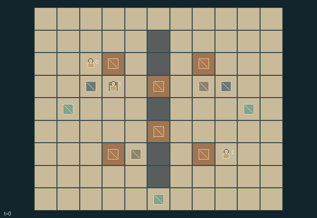

GI206 · Echo Quarry

Original recording scope: 角色0实际可见视角 · Mode: 实际诊断回放
Additional generated state replay (different trajectory / full-state debug)

Expose and deliver all six owner-tagged parcels without fatal collapse.
Identity and original contract
3 independently actionable roles; 11 discrete commands per role; 210 native observation columns per role; original horizon 150 steps. Declared per-step reward range: -6 to 6. Observation regime: fully_observable.
Source SHA-256: fa36e8e9425db04b74a1df9bf754e6ed626b972812d51080a9a3d89575b4a70e
The objective, rewards, population, map and horizon remain original. A preview is not a success claim.
Objective and gameplay
Expose and deliver all six owner-tagged parcels without fatal collapse.
Drilling one wall exposes ore but transmits vibration through rock to nearby support sites. Peers can brace, move finite screens, clear rubble or choose perimeter routes; removing a screen changes another worker's loaded slab risk.
- Two drill-work units expose an ore parcel and remove its wall. Permanent rock stays solid, but vibration travels through it.
- Each drilled wall sends two vibration units to slabs within four cells. A deployed screen within one cell of a slab absorbs two units.
- An occupied slab carries worker weight plus one for carried ore. Vibration, load and accumulated stress can reach collapse at eight.
- A free-handed brace within one cell reduces the nearest slab's stress by two; quiet steps also relax stress by one.
- A collapsed site holds two blocking rubble units. Clear them with two actions; clearing does not restore the support.
- Carry one parcel or screen. Deliver a parcel beside its tagged owner's depot; perimeter floor routes around the dividing wall remain available.
- Deliveries reward the owner and carrier; every collapse imposes a shared cost. Fatal injury or lost ore ends the shift.
- All visual geometry is native state. Fixed scripts remain unexecuted author hypotheses.
Ending: All parcels delivered is success. A worker caught in a new collapse or an ore parcel lost is failure unless success; otherwise truncate at 150.
What this game explores
Information, sensing & communication: Who knows a fact, when it was measured, and whether it was communicated are separate state variables. Test memory or communication using only the same role-visible evidence.
Resource commons & externalities: An action changes a persistent resource or burden that another role also encounters. Compare extraction with maintenance and record the downstream resource trajectory.
Complementary production & service: A useful outcome requires ordered stages, scarce equipment or another role's capability. Measure real completed products and resource circulation rather than counting intermediate actions as success.
Joint transport & shared access: Positions, load geometry, occupancy and persistent access constrain whose action can succeed next. Distinguish physical handoff, shared controls and simultaneous force from a cosmetic cooperation label.
Survival, protection & rescue: Protection and repair alter another role's future feasible actions. Record losses, exposure, rescue and infrastructure as well as delivery; survival is determined by the actual kernel.
These are questions supported by rule structure, not observed learning effects.
Play it: operating walkthrough
crucibles play --game gi206Keep Python running and open its printed address. Select this game, set a seed and press Create session. The game itself is always English.
Assign a role range to Host with Assign / take over, or Assign all roles. Invite a second participant with Create player invitation, then assign a disjoint subset. Every original role is available.
For every owned role choose a legal command and press Queue. Arrow keys / WASD queue a declared directional action for the current role camera when available. Space or Advance one joint step advances everyone together. Non-directional games use the selectors.
Unqueued roles use the labelled untrained uniform-legal policy. Take over or release roles before the next step without resetting. Full-state debug is privileged and permanently logged; role cameras preserve permissions. Close the session to retain logs. Server restart does not restore sessions.
Complete command reference
IDs and English labels exactly match the manifest. Availability depends on role, resources, location and phase. An available action can still have no productive effect.
0·Wait
1·Walk north
2·Walk east
3·Walk south
4·Walk west
5·Drill nearest eligible ore wall
6·Brace nearest intact slab for this step
7·Pick up nearby loose ore, otherwise insulation screen
8·Drop carried object at current cell
9·Deliver carried ore beside its owner's depot
10·Clear one rubble unit from nearby slab
Roles and capability identifiers
These original role names describe capabilities, not interchangeable skins. Check each owned role's legal selector before planning handoffs.
agent_0·West drilling crew
agent_1·Slab support and insulation crew
agent_2·East salvage crew
Information and observation permissions
Fully public native map, actors, objects, ledgers and events. Delivered/lost ore deactivates visually while its status and final position remain in every observation.
The GIF is full-state debug and may reveal hidden entities or private state. Train on obs[agent], not the picture, state tree or another role's private row. Field slices and visibility are in the original manifest.
Reinforcement-learning integration
import jax
from crucibles_jaxmarl import make
env = make("gi206")
key = jax.random.PRNGKey(0)
key, rk, ak, sk = jax.random.split(key, 4)
obs, state = jax.jit(env.reset)(rk)
actions = env.sample_actions(ak, state)
obs, state, rewards, dones, info = jax.jit(env.step_env)(sk, state, actions)
done = dones["__all__"]Observations are float32 vectors of width 210; actions are scalar int32; masks have 11 entries. Supply all 3 roles each transition. Masked sampling is an engineering reference, not a trained learner.
step_env retains terminal data without reset. step performs outer autoreset and keeps terminal data in info["raw_state"] and info["raw_observation"]. Use dones["__all__"] for episode boundaries; separate completion, failure and time limit in analysis.
JIT or vmap equal identities and shapes. Split independent reset, policy and transition keys. Group different shapes explicitly; do not shrink the population or horizon. Host rendering stays outside training.
Training questions and fair evaluation
Define valid completion from the objective before fitting. Preserve original rewards and also report real deliveries/services, losses, resource state, unresolved episodes and per-role returns. Animation is not a reward signal.
Who knows a fact, when it was measured, and whether it was communicated are separate state variables. Test memory or communication using only the same role-visible evidence.
An action changes a persistent resource or burden that another role also encounters. Compare extraction with maintenance and record the downstream resource trajectory.
A useful outcome requires ordered stages, scarce equipment or another role's capability. Measure real completed products and resource circulation rather than counting intermediate actions as success.
Positions, load geometry, occupancy and persistent access constrain whose action can succeed next. Distinguish physical handoff, shared controls and simultaneous force from a cosmetic cooperation label.
Protection and repair alter another role's future feasible actions. Record losses, exposure, rescue and infrastructure as well as delivery; survival is determined by the actual kernel.
Compare memory, communication or centralized critics under matched actor information. Declare critic access; keep actor inputs role-filtered. Match partner/opponent distributions, masks, compute and checkpoint selection. Final tests never enter fitting or selection.
Independent training runs or source-pairing blocks are inferential units; episodes from one policy are not independent training replications. Save hashes, keys, versions, device, time and cost. Negative, zero, failed and indeterminate outcomes are valid. No trained checkpoint or target score is supplied.
Classification and evidence
Overlapping editorial labels are reading aids, not proof of novelty, difficulty, strategic equivalence or learning effects.
- Information, sensing & communication
- Evidence
manifest.task.observation_access: Fully public native map, actors, objects, ledgers and events. Delivered/lost ore deactivates visually while its status and final position remain in every observation.
- Resource commons & externalities
- Evidence
manifest.task.objective: Expose and deliver all six owner-tagged parcels without fatal collapse.
- Complementary production & service
- Evidence
manifest.task.objective: Expose and deliver all six owner-tagged parcels without fatal collapse.
- Joint transport & shared access
- Evidence
manifest.task.objective: Expose and deliver all six owner-tagged parcels without fatal collapse.
- Evidence
manifest.task.interaction: Drilling one wall exposes ore but transmits vibration through rock to nearby support sites. Peers can brace, move finite screens, clear rubble or choose perimeter routes; removing a screen changes another worker's loaded slab risk.
- Evidence
manifest.task.observation_access: Fully public native map, actors, objects, ledgers and events. Delivered/lost ore deactivates visually while its status and final position remain in every observation.
- Survival, protection & rescue
- Evidence
manifest.task.objective: Expose and deliver all six owner-tagged parcels without fatal collapse.
- Evidence
scene.rules.2: An occupied slab carries worker weight plus one for carried ore. Vibration, load and accumulated stress can reach collapse at eight.
- Evidence
scene.rules.4: A collapsed site holds two blocking rubble units. Clear them with two actions; clearing does not restore the support.
Source, receipts and preview limits
The additional generated state GIF replays saved untrained legal actions through the original kernel. At most 25 actual endpoints include initial and terminal state; no invented interpolation. It is full-state debug, not the role observation. Where an original scene preview exists, it is displayed first with its own recorded information scope. The two recordings may use different trajectories and views.
Original source, observation slices, manifest and mechanism
Native receipt · Presentation receipt
Engineering passes do not establish learning. Nonzero floating differences remain recorded and undetermined; no new tolerance was introduced. Human scores remain unverified.